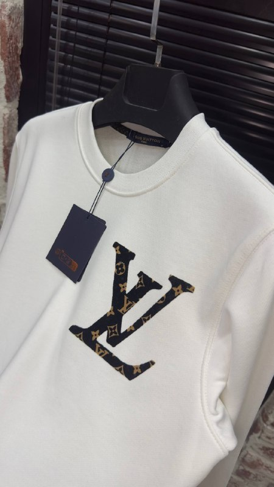

Toptan Eşofman Alımında Koli Mantığı ve Karışık Sipariş

Toptan eşofman alımında en kritik karar koli mantığı ve beden/renk karışımıdır. Yanlış karışım = kalmış stok + nakit akışı kilitlenmesi. Doğru karışım = hızlı devir + yüksek kar marjı. Bu yazıda 10+ yıllık toptan deneyimimizden出した pratik formülleri paylaşıyoruz.
Koli Mantığı Nedir ve Neden Önemlidir?
Üreticiler (biz dahil) eşofmanları paket (koli) halinde satar. Tek parça satış yoktur. Standart paketler:
- 6'lı Koli: 1 S + 2 M + 2 L + 1 XL (veya 1-2-2-1 XS/S/M/L/XL)
- 12'lı Koli: 2 S + 3 M + 3 L + 2 XL + 1 XXL + 1 XS
Bu dağılım rastgele değil; Türkiye pazar beden talep dağılımına göre optimize edilmiştir. M-L-XL %75-80'i oluşturur. S ve XXL "kenar bedenler"dir, az satılır ama vitrinde olmalıdır.
Standart Beden Dağılım Tabloları
6'lı Koli İçin Önerilen Dağılım
| Beden | Adet | % | Not |
|---|---|---|---|
| XS | 0-1 | 0-17% | İsteğe bağlı, genç/kadın müşteri varsa |
| S | 1 | 17% | Zorunlu |
| M | 2 | 33% | En çok satan |
| L | 2 | 33% | En çok satan |
| XL | 1 | 17% | İkinci sıra |
| XXL | 0-1 | 0-17% | İsteğe bağlı |
12'lı Koli İçin Önerilen Dağılım
| Beden | Adet | % |
|---|---|---|
| XS | 1 | 8% |
| S | 2 | 17% |
| M | 3 | 25% |
| L | 3 | 25% |
| XL | 2 | 17% |
| XXL | 1 | 8% |
Renk Karışım Stratejisi
Beden kadar renk de kritiktir. Kural: %70 Temel Renk + %30 Sezon/Moda Renk
- Temel Renkler (Her zaman stokta olmalı): Siyah, Lacivert, Antracit/Gri, Koyu Kahve. Bu renkler yıl boyu satılır, iade riski düşüktür.
- Sezon Renkleri (Sınırlı): Zeytin yeşili, Camel/Bej, Koyu Kırmızı/Bordo, Petrol Mavisi, Koyu Mor. Sezon başlangıcında çeker, sezon sonunda kalır.
- Koli Bazında Renk Dağılımı (6'lı için): 2 Siyah + 1 Lacivert + 1 Antracit + 1 Sezon Rengi + 1 Temel Renk (tekrar).
Müşteri Profilinize Göre Karışımı Özelleştirin
🏪 Klasik Butik / Mahalle Mağazası
Müşteri yaşı 35+, klasik kesim sever. → Daha fazla L/XL, temel renkler ağırlıklı. S az, XXL yok.
🛍️ Trend Butik / Genç Hedefli
Müşteri 18-30, oversize sever. → S/M artı, XL az, XXL Yok. Sezon renkleri %40. Oversize kesim modeller seçin.
📦 Online Satıcı (Trendyol/Hepsiburada)
Geniş beden yelpazesi şart. → XS'ten XXL'ye tüm bedenler 1'er li (12'lı koli). Renkçe 3-4 varyant. Stok derinliği az, hızlı devir.
🌍 İhracat / Dış Pazar
EU/US bedenleri farklı. → EU beden tablosuna göre (46-58) dağılım. Temel renkler %90. Kalite belgeli (OEKO-TEX vb.)
Stok Yönetimi ve Yeniden Sipariş (Reorder) Stratejisi
- İlk Sipariş (Sezon Başı): 12'lı koli x 3-5 renk = 36-60 parça/model. Test için.
- Haftalık Satış Takibi: Her Cuma satış verinizi girin. Hangi beden/renk bitti?
- Yeniden Sipariş (Reorder) Kuralı: Bir beden/renk 3 günden az sürede biterse → o kombinasyon için 6'lı koli tekrar siparişi verin.
- Sezon Ortası (Aralık): Sadece M-L-XL temel renklerde 6'lı koli siparişi. S/XXL ve sezon renkleri sipariş vermeyin.
- Sezon Sonu (Şubat): Sipariş durdurun. Kalan stok için indirimli "son parti" kampanyası planlayın.
Kar Marjı Hesaplaması (Örnek)
| Kalem | 6'lı Koli | 12'lı Koli |
|---|---|---|
| Toptan Maliyet (Parça) | ~350 TL | ~330 TL |
| Koli Toplam Maliyet | 2.100 TL | 3.960 TL |
| Perakende Satış Fiyatı (Ort.) | 699 TL | 699 TL |
| Brüt Gelir (Hepsi Satılırsa) | 4.194 TL | 8.388 TL |
| Brüt Kar (Hepsi Satılırsa) | 2.094 TL (%50) | 4.428 TL (%53) |
| Gerçekçi Satış (%85 devir) | ~1.500 TL | ~3.200 TL |
* Fiyatlar örnektir, güncel fiyatlar için WhatsApp/Telegram'dan iletişime geçin. Kargo, marketplace komisyonu, KDV, personel giderleri dahil edilmediğinde net kar %30-35 bandındadır.
Solmaz Fashion Kolaylığı: Karışık Model/Beden Siparişi
Biz aynı model içinde farklı renk/beden karışımına izin veririz. Yani 1 kolide: 2 Siyah M + 2 Lacivert L + 1 Antracit XL + 1 Zeytin S gibi. Bu sayede:
- Tek model için minimum sipariş adedi (MOQ) düşer.
- Vitrin çeşitliliği artar, müşteri seçimi genişler.
- Risk dağıtılmış olur (tek renk/beden kalmaz).
Not: Farklı modelleri (örn. sweatshirt + eşofman) aynı kolide karıştıramayız — paketleme ve barkodlama süreçleri ayrıdır.
Sipariş Formu Örneği (WhatsApp'a Gönderebileceğiniz Format)
📦 SİPARİŞ FORMU - SOLMAZ FASHION
🏪 Mağaza: [Mağaza Adı]
📍 Şehir: [İl/İlçe]
📞 Telefon: [WhatsApp No]
📅 Tarih: [GG.AA.YYYY]
🔷 MODEL: 3 İplik Şardon Eşofman (Kod: ES-2026-01)
📦 PAKET: 12'lı Koli x 3 Adet = 36 Pcs
🎨 RENK / BEDEN DAĞILIMI:
S M L XL XXL TOPLAM
Siyah 1 2 2 1 1 7
Lacivert 1 1 1 1 0 4
Antracit 0 1 1 1 0 3
Zeytin 0 1 1 0 0 2
Kahve 0 1 1 1 0 3
Camel 0 0 1 1 0 2
TOPLAM 2 6 7 5 1 21 (Kalan 15 pcs başka renk/beden)
🚚 TESLİMAT: Kargo / Kendi Aracı / Merter Alış
💳 ÖDEME: Peşin / Kapıda Ödemeli / Havale (Seçiniz)
✅ ONAY: [Ad Soyad / İmza]💡 Özet Checklist:
- Müşteri profilinize göre beden dağılımı belirleyin
- %70 temel renk + %30 sezon rengi kuralı uygulayın
- İlk siparişte 12'lı koli ile test edin
- Haftalık satış verisi girin, hızlı bitenleri reorder edin
- Sezon sonu 6 hafta önce siparişi durdurun
- Karışık renk/beden siparişi için bizimle iletişime geçin
Stok ve Fiyat İçin Hemen İletişime Geçin
Güncel eşofman modellerimiz, renk kartı, beden tablosu ve toptan fiyatları için WhatsApp: +90 546 939 20 28 veya Telegram: t.me/Boomerbrandd kanalımdan bize ulaşın. Size özel beden/renk karışımı önerisi hazırlayalım.